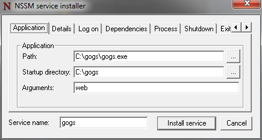
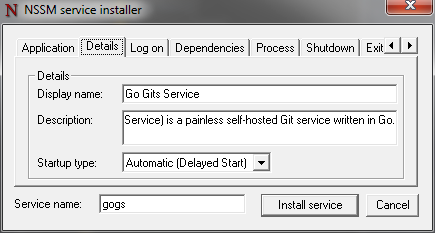
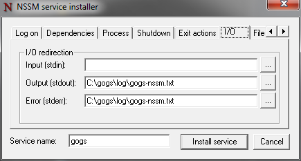
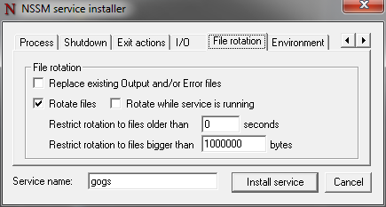
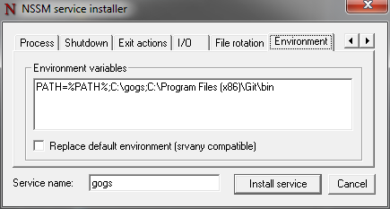

注册为 Windows 服务运行
前提要求
想要使 Gogs 通过 Windows 服务的方式运行，必须满足以下两个条件：
- 使用
miniwinsvc构建标签获得内置 Windows 服务支持。 - 不使用
miniwinsvc构建标签并通过 NSSM 注册为服务。
在注册成为服务之前，需要确保给予 Gogs 二进制相应目录的读写权限，包括存放仓库的根目录（[repository] ROOT）。
修改 C:\Gogs\custom\conf\app.ini 文件的相应信息：
RUN_USER = COMPUTERNAME$
通过上面的配置将 Gogs 的运行用户设置为本地系统用户。COMPUTERNAME 的值可以通过命令 echo %COMPUTERNAME% 获得，如果该命令的返回值为 USER-PC 则使用 RUN_USER = USER-PC$：
[server]DOMAIN = gogsPROTOCOL = httpHTTP_ADDR = 127.0.1.1HTTP_PORT = 80OFFLINE_MODE = trueROOT_URL = http://gogs/
Moves Gogs’ listen port to 80 on the local interface subnet, and tells the Gogs HTTPd that its virtual host is the “gogs” domain.
This lets you forgo including a port number when browsing, and prevents collision with other localhost services.
The IP address can be anything in the range 127.0.0.2 - 127.254.254.254, so long as it’s unique to Gogs.
To complete that network route, open Notepad.exe as administrator and include the following in C:\Windows\System32\drivers\etc\hosts:
# Gogs local HTTPd127.0.1.1 gogs
The hosts file entry will guarantee that all requests to the “gogs” domain are captured by your localhost interface.
In a web browser, generally, gogs/ in the address bar is sufficient to trigger that route.
Use Builtin Functionality
Open a command prompt (cmd.exe) as an Administrator. Run the following command:
C:\> sc create gogs start= auto binPath= "\"C:\gogs\gogs.exe\" web --config \"C:\gogs\custom\conf\app.ini\""
Ensure there is a space after each =. You can choose to add additional Arguments to further modify your service, or modify it manually in the service management console.
To start the service run following command:
C:\> net start gogs
You should see following output:
The gogs service is starting.The gogs service was started successfully.
Use NSSM
Get the nssm.exe needed for your machine (32 or 64 bit; they’re packaged together in Iain’s zip file), and place it in a directory that is in (or will be added to) your %PATH% environment variable.
Open a command line as administrator and do following command to configure Gogs as a service:
C:\>nssm install gogs
“NSSM service installer” will appear. Configure it as follows:
Application tab:
- Path:
C:\gogs\gogs.exe - Startup directory:
C:\gogs - Arguments:
web

Details tab:
- Display name:
Gogs - Description:
A painless self-hosted Git service. - Startup type:
Automatic (Delayed Start)
Note that we’ve chosen delayed start, so that the service will not impact the early boot time. Gogs will start two minutes after the non-delayed services.

I/O tab:
- Output (stdout):
C:\gogs\log\gogs-nssm.txt - Error (stderr):
C:\gogs\log\gogs-nssm.txt
That will capture all text output that you would normally receive from Gogs on the command line console, and log it to that file instead.

File rotation tab:
- Check:
Rotate files - Restrict rotation to files bigger than:
1000000 bytes

Environment tab:
- Environment variables:
PATH=%PATH%;C:\gogs;C:\Program Files (x86)\Git\bin
That is a guarantee that both gogs.exe and git.exe will be on the Gogs service’s path variable during runtime.

Click “Install service”, and you should be confirmed that it succeeded.
If it failed, refer back to the command line console you started, for the error message. When it succeeds, go to command line and do:
nssm start gogs
You should see:
gogs: START: The operation completed successfully.
Check that this is true by opening C:\gogs\log\gogs-nssm.txt. You should see Gogs’ start up procedures, ending with:
timestamp [I] Run Mode: Productiontimestamp [I] Listen: http://127.0.1.1:80
Now point your web browser at http://gogs/ and log in.
Gogs is running as a service, and will not need to be run manually, unless something goes wrong. NSSM will attempt to restart the service for you, if the Gogs server crashes.
When you need to restart it after app.ini changes, go to an administrator command line after the changes, and do:
nssm restart gogs
See the configuration cheat sheet for reference of the custom\conf\app.ini settings.
An example of the logging and error handling in action:
[log]ROOT_PATH = C:\gogs\log
At the time of writing this line, it will cause the following to print in C:\gogs\log\gogs-nssm.txt:
timestamp [T] Custom path: C:/gogs/customtimestamp [T] Log path: C:\gogs\logtimestamp [I] Gogs x.y.ztimestamp [log.go:294 Error()] [E] Fail to set logger(file): invalid character 'g' in string escape code
This is what was expected in C:\custom\conf\app.ini:
ROOT_PATH = C:/gogs/log
And this was the nssm interaction while solving it:
C:\>nssm restart gogsgogs: STOP: The operation completed successfully.gogs: Unexpected status SERVICE_PAUSED in response to START control.C:\>nssm start gogsgogs: START: An instance of the service is already running.C:\>nssm stop gogsgogs: STOP: The operation completed successfully.C:\>nssm start gogsgogs: Unexpected status SERVICE_PAUSED in response to START control.C:\>nssm restart gogsgogs: STOP: The operation completed successfully.gogs: START: The operation completed successfully.